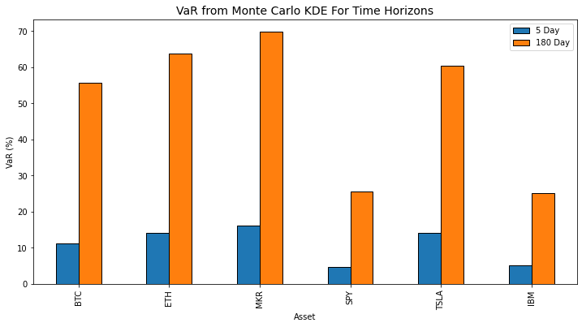

Value at Risk
Finding the value risk from holding assets using various methods
One of the big benefits of crypto and to a lesser extent, stocks, is their liquidity. The ability for a holder of some crypto or equity asset to exchange it for another or cold hard cash increases its value. You know if you suddenly needed stock in a car company or cash to pay rent you can make that happen in minutes to hours. Trading a stock to cash and then withdrawing to another account and then getting paper for it might take a few days but in the grand scheme of things it's quick even if it's glacial compared to crypto.
The benefit of this liquidity means holders can act quickly when given new information as well as feel more comfortable holding an asset since they know they can exchange it for another if needed. This exchange rate is obviously subject to market conditions and an asset like Bitcoin has a very different market than the S&P 500. This makes holders who might need to exchange their assets more comfortable owning something that doesn't change in value as fast despite their long term view.
In more tangible terms, someone might think that in 10 years Bitcoin will be the only currency in the world, or MakerDAO will be a larger currency issuer than the US Government. In shorter terms though you might have to pay rent of buy a Ferrari, so despite your conviction 10 years from now you have priorities with shorter time horizons. While you know you can liquidate your BTC or MKR for Ferraris quickly, you don't know what the value of them will be when that time comes and your conviction of your 10 year thesis might have very little effect. Let's look at a way we can estimate what our risk of losing value on any asset would be so we can plan our portfolios for our 10 year theses and our Ferrari buying needs. The metric we'll look at is called the Value at Risk.
What even does that even mean?
Value at Risk or VaR is a traditional finance metric to quantify what amount of our assets we can lose with a given confidence interval over a certain period of time. In more simple terms, we can find the most we can expect to lose with a certain percentage of confidence based on the historical performance of a single asset or portfolio over some time period.
Value at Risk can most accurately be shown as a percentage. If we have an example of an asset with a VaR of 20% based on a 95% confidence interval and a time horizon of one week, we can say that there's a 95% percent chance we'll lose no more than 20% of value over one week.
Losing 20% sounds bad but if we're reasonably (95% sure) that we won't lose more than that, it can help us decide how much of an asset we want to hold. This measure of ‚Äúrisk‚Äù helps us determine how much we allocate to different assets. Even if we love Bitcoin, and are certain all world governments will default and the only valuable currency in the world will be the unit of account of some blockchain with less than 1,000,000 blocks, but we don't feel comfortable putting 100% of our savings in something that can be down 10% over a week, maybe we diversify into gold ü•á¬†and ornamental gourds üßâ as well.
At a glance this makes sense, the percentages we can expect to lose over 5 days track with our perception of each of these assets. Except for that car company.
Given the numbers we have here we should understand how to calculate them to ensure the way they're calculated makes sense with our understanding of how these things are valued.
Math vs. math
Seeing how VaR is calculated might help make better sense of what that VaR number really is if the method of calculation tracks with our understanding. To calculate the above VaRs I used the “parametric” method of using a normal distribution to calculate at what point we'll be 95% sure what our maximum loss would be. The formula for VaR I used:
The first thing we need is the Z score of returns for a confidence interval. A Z-Score on its own is meant to normalize a value in a distribution so that we can compare a value with what one would expect the return to be normally. Mathematically, it's the mean of a sample minus the value you're interested in, divided by the standard deviation. So we know how many standard deviations our sample is away from the mean of the population.
Z-alpha is the variable to denote the number of standard deviations where the top 95% of a normal distribution lies. It utilizes the confidence interval and for a normal distribution it's a single number (1.65 in the case of 95%) meaning that 95% of values should be above 1.65 standard deviations below the mean. For a one day VaR on BTC we have \( \text{VaR} = -0.01 - 1.65 * 2.99 * \sqrt{1} = -4.9\% \)
If we show a histogram of the returns, along with the assumed normal distribution curve and the VaR we should see how this comes together. Or it will show the shortcomings of this calculation…
Ok, we've found our first “wrong” assumption, returns are not normally distributed! The blue line shows the normal distribution based on the mean and the standard deviation of the daily returns of BTC for the past two years. We can see this line does not reflect the shape of the distribution at all. I wouldn't rely too heavily on a metric that makes an assumption as big (and wrong) as that. So let's see what else we can do.
Let's make sure we're not assuming the shape of some curve and just use the actual measured values of the past returns of any asset. We'll remove the smoothness of a curve that can theoretically be extrapolated for any time period, and we'll just rely on the actual data we have for the past two years.
Rather than take the 95th percentile of a normal distribution, let's take the 95th percentile of the actual daily returns for our assets. Rather than assuming that traders of crypto or any asset follow some “normal” distribution we'll just order the daily returns. I'll show this in python and maybe it will be more tangible than some math equation.
def calc_var_sort(prices: pd.Series, confidence: float = 0.95, time: int = 1) -> float:
'''
Calculate the Value at Risk (VaR) for a given series of returns using sorted historical data.
Parameters:
- prices (pd.Series): The series of asset prices
- confidence_level (float): The confidence level for VaR (e.g., 0.95 for 95% confidence)
- time (int): The time horizon in days for which to calculate VaR
Returns:
- var (float): The calculated VaR
'''
# Turn prices into returns
returns = prices.pct_change()
# Sort the returns
sorted_returns = returns.sort_values()
# Calculate the index corresponding to the (1 - confidence_level) quantile
index = int((1 - confidence_level) * len(sorted_returns))
# Get the VaR value
var = sorted_returns.iloc[index]
# Adjust VaR for the time horizon
var = var * np.sqrt(time)
return varUsing this way to calculate VaR gets us the slightly different results on our assets than above. Note I am using the last 2 years of data so for crypto that's 730 trading days, and for equities it's 504 trading days.
Ok different, but not that different. Luckily the comparisons hold steady in that crypto is more volatile than a market index or a typewriter maker.
Sorting values does make more sense than assuming a normal distribution and is probably the best way to go especially because we know we can always get daily price history for assets like this. But let's say we still want some good old fashioned math and not rely on historical data. And maybe we want to use a bit more computer power. Let's see what we can do.
Not normal curves
The distribution of returns on Bitcoin may not be normal so we should find the actual distribution curve that represents daily returns, or at least is much closer. Let's go through some options. One distribution that's more popular in finance is the Cauchy distribution. You can think of this distribution as more pointy towards the mean with fatter tails allowing for days of higher losses or gains. In addition to the Cauchy distribution which has some fancy math behind it, we can also create a Kernel Density Estimation from the historical data we have, that essentially just fits any curve to the real data that we have.
Cauchy
Let's describe the Cauchy distribution first. The Cauchy model is given by this ugly piece of math:
\[ f(x; x_0, \gamma) = \frac{1}{\pi \gamma \left[1 + \left(\frac{x - x_0}{\gamma}\right)^2\right]} \] . This is better when we have less data to work with and means we're making fewer assumptions that past performance will be the same as the future. The Cauchy distribution also has the attribute of “fat tails” and a more convex shape making the median of the data the most common but with the increased chance of more extreme events. More extreme events definitely sounds like crypto.
So now we have a “natural” distribution that is probably better than the normal distribution which is popular but looks so wrong. What about an “unnatural” distribution? One where we're not assuming trading returns are fitting elegantly into some math formula and in actuality are driven by emotional humans reacting to random data.
KDE
Enter the Kernel Density Estimation. Instead of trying to get parameters for a natural curve, let's just put a curve over the real returns and have it fill in the gaps and smooth out the data as if we had longer timeframes.
The benefits of fitting a KDE distribution is that it doesn't rely on or assume any given model. It's just reliant on the data that you use to create it. The KDE is intuitive in that it just fits a given model and we can always go back and retrain given new information or more data. One can think of a KDE distribution as pouring melted glass on the histogram of real data, it takes the shape of the real data but is able to fill in the gaps and add smoothness to our curve.
Let's see what both of these distributions look like and then calculate some VaRs from those curves to see if they're any better.

While the Cauchy distribution looks pretty good when dealing with the middle of the data we can see that the “fat tail” concept has really hurt our VaR. The tail that's cut off in this graph keeps going and going making the 95th percentile much lower so that our VaR is a bigger negative number and might cause us to think we're risking a lot more money. The histogram is somewhat misleading as well as BTC has returned <7.6% 12 times in the past 2 years, so the Cauchy VaR makes more sense than this plot shows. The issue is purely there's not enough samples to create a visible bin(bar) in the histogram.
Our KDE VaR does seem “better” and makes more sense with the plot but because we're only working with historical data and the KDE is very data dependent. The dependence on historical data might have the criticism of data mining (finance) or overfitting (math) as it's used to create forward estimations and makes a bigger assumption about forward returns being similar to the past. Maybe there's something we can do to add more data and our own outlook as well.
Adding forward data with our own outlook
Up to this point we've been creating all metrics with past data and even if our Normal and Cauchy curves are less data dependent they're still being fit on two historically bad years for bitcoin. Having your data represent only the past performance is not indicative if you believe your asset is going to change behavior (like if it were to dramatically improve against the dollar because of sudden US hyperinflation).
If you believe your asset will go up in value we should find a way to include that in all of our estimations. No one can know the exact daily movements, but we can assume that volatility will be similar and then we can have our own opinion on the overall direction over a year. If we thought BTC was going to appreciate 20% we could use the past KDE to estimate daily returns but with an annual return of 20% for the next year.
That… looks like it makes sense. Let's see how I made that.
def kde_forward_prices(start_price, desired_return, kde, days=365, precision=0.01):
'''
Function for creating a sample series of prices with a desired return.
This version uses KDE to sample returns.
The precision variable ensures the given return is not lost by randomness
'''
#get the final price as the starting price with the desired return
desired_price = start_price * (1 + desired_return)
loc = desired_return / days # Location parameter (median) of distribution
#simulate to ensure outcome
for k in range(0, 1000):
# Sample returns from the fitted KDE
returns = kde.resample(days).flatten()
prices = (1 + returns).cumprod()
prices = prices / prices[0] * start_price
final_price = prices[-1]
#check if calculated final price is within given precision, if not, try again
if final_price >= desired_price * (1 - precision) and final_price <= desired_price * (1 + precision):
break
return prices
#generate KDE based on historical returns
btc_hist_kernal = gaussian_kde(btc.pct_change().dropna())
#create prices with last given btc price, a 20% return, and the KDE
btc_forward = kde_forward_prices(btc[-1], 0.2, btc_hist_kernal)This will make a somewhat random series of prices but with the same KDE and return, so if you run it you will have a different shape to the line but the one year return and KDE will be the same.
Now what if we calculated the VaR on the three year data that includes this one year of simulated data we might get closer to what a BTC VaR is to us since we included what we think Bitcoin will do for another year. We can see the new data we added still has down days, so the concept of a metric that tells us how much value we can lose over a given time period still seems like it will be representative; but if we think Bitcoin will have a good year this calculation gets us closer to what we actually think will happen.
Using this three year series with two years of historical and one year simulated gets us 1 day, 95% VaR of 8.02% for the Cauchy distribution and 4.74% for the KDE distribution. So the forward year simulation didn't change much but the fact that it didn't change much is informative in that even if we expect BTC to have a good 12 months we still have a risk of losing 5-8% of our value in 24 hours.
Next time we can look at ways to construct a portfolio and reduce our risks and preserve capital, but I still have one thing we can cover here. Initially when we were just using math I was finding the 5 day Value at Risk by using the time horizon component of \( *\sqrt{\text{Days}} \). There has to be a better way though, especially because as time goes on your chances of recovery rise as well. Just multiplying your possible one day loss for your time horizon would eventually get you above 100% as your horizon grows, and we should be able to see a real number for our requirement of a “possible loss over a realistic time frame.” If we don't check our portfolio more than once per week or we want to hold our assets for 6 months without changes we want to know what our possible losses could be.
Let's combine all the aspects we've done so far and simulate a ton of portfolios so we can feel more certain about this time horizon aspect.
Enter the simulation
We'll do this relatively simple Monte Carlo Simulation in Python and it will show a lot of the different elements we've developed so far. A Monte Carlo Simulation is just a way to make thousands of hypothetical portfolios and analyze the distribution of those results, named after the famous casino we're just rolling the dice over and over with the magic of computerz üñ•Ô∏è.
Let's first make a function for finding a VaR at any time horizon by simulating the returns based on the KDE distribution and finding the 95th percentile return.
def monte_carlo_var_kde(start_value, kde, N, M):
"""
start_value: The initial value of the portfolio
kde: Kernel Density Estimation of the 1-day returns from scipy.stats gaussian_kdev (not multiplied by 100)
N: Time horizon in days
M: Number of Monte Carlo runs
"""
# Initialize an array to hold the portfolio values at the end of N days for each Monte Carlo run
final_values = np.zeros(M)
# Loop for each Monte Carlo run
for i in range(M):
# Sample N-day returns based on KDE
daily_returns = kde.resample(N).flatten()
# Calculate the portfolio value at the end of N days for this Monte Carlo run
portfolio_values = start_value * np.cumprod(1 + daily_returns)
final_values[i] = portfolio_values[-1]
# Sort the final M portfolio values to calculate VaR
final_sorted_values = np.sort(final_values)
# 5% VaR is the value at the 5th percentile of the sorted final values
var_95 = (1 - np.percentile(final_sorted_values, 5)/start_value)*100
return var_95
kde = gaussian_kde(prices.pct_change().dropna())
var = (prices[-1], kde, 5, 10000)Now if we use our bitcoin returns (sans simulated values) we can get a 5 day VaR and we can plot the 5 day returns from 10,000 simulations to see a smoother distribution from our pretend portfolios.
The 5 day 95th percentile VaR we get from this method is 11.49%. If we compare that to the one day VaR we calculated multiplied by our square root of 5 days we get \( 4.95 * \sqrt{5} = 11.06\% \) , so… pretty close. But what about if we don't want to adjust our portfolio for 6 months? Let's see if this method is even better for longer time horizons. If we run our function, we get a VaR or 55.14% from 10,000 simulated portfolios compared to \( 4.95*\sqrt{180}=66.41\% \) so we can start to see this divergence at larger time frames.
Here are all of our assets using this method.
Because I was curious I wanted to see what the relationship between the long timeframe and short timeframe.
It appears there's somewhat an inverse relationship between the overall volatility of the asset and the difference between short and long time horizons. Interesting, but not so interesting that I'm going to look deeper into that.
This simulation is no harder to calculate than all the math we've shown thus far and it does make more intuitive sense as well for finding a theoretical Value at Risk so I think it's a great option for anyone with a basic grasp of python to use. It also has the added benefit that this would be extremely difficult to do for any of the excel jockeys üèᬆout there so you can have some more justified coding elitism.
Conclusion
Hopefully this exploration into Value at Risk helped understanding what this metric is and some good ways to calculate it. For me, exploring the different ways to calculate this metric helped me understand what the VaR really is as well as its limitations. I would definitely have a lot of questions for someone who was using a multi day VaR from a normal distribution and using it for anything other than comparing to other assets. I also have the ability to calculate the VaR of any asset using these methods now that I've written the code, so doing a more robust analysis is even easier than some napkin math now.
I'll put some of this code on my github for easy use but just copy and pasting should be more helpful. I have a number of function in my crypto portfolio management repo that you can use to help do a lot of the calculations I've done in this blog.
As I mentioned before, next we can look at how we can reduce this VaR (and risk in general) with the magic of ✨diversification✨.